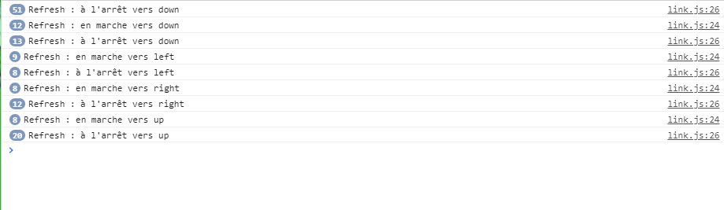

Il est temps de vraiment travailler sur link.
Une chose très simple à faire à ce niveau là est de commencer par modifier la propriété "direction" dans vos méthodes move...() de link, pour y mettre une valeur qui convienne, par exemmple "up", "down", "right" ou "left" (selon la méthode bien sûr).
Cette propriété n'est u'une simple chaîne de caractère qui nous permet de mémoriser la direction dans laquelle link regarde. Nous en auront besoin plus tard.
Pour tester votre code, vous pouvez modifier vos log pour qu'ils affichent la direction, mieux encore, vous pouvez les supprimer, et demander au log de la méthode refresh de vous dire dans quel direction regarde link.
Vous allez aussi modifier la propriété "isWalking" de link.
Celle-ci doit-être mise à "true" dans toutes les méthodes "move...()"" et à false dans la méthode "stop()".
Ue petite modification 'simple IF' de votre méthode "refresh" vous permettra d'afficher des logs différents si link marche (isWalking) ou pas.
Après modification vos logs devraient ressembler à ceci
